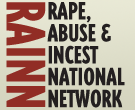

RESOURCES
The National Sexual Violence Resource Center

The Rape, Abuse and Incest National Network
If you or someone you know has been a victim of sexual assualt and need immediate help please call 911.
For live help for victims or supporters and families, please call 800.656.HOPE(4673) or visit the online support line.